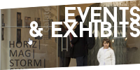
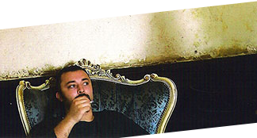

LiviuSEBASTIAAN'S
Code, Art and Multimedia Works

in Alzenau/Unterfranken, Germany, since 2017, doing various 3D VR Foto and design projects, video editing, and plotting new art concepts
2013-2017: Personal and group exhibs with sculpture, instalation, video Art, experiments, coding
2015-2017 period: worked with a team as lead 3D generalist on 2D/3D animations and games projects, and more film compositing FX.
2015 Art Management MOOC @ Goethe&Leuphana, Second prize and 5 academic credits for the Team POMMEGRANATE work over the Berlin HAU Theater case-study. (Best Berlin case study team)
2007-2013 period: four exhibitions displaying ceramic and painting works produced with children during the "Eyes on Fingers" projects.
Placed in Bucharest between 2002-2017 . Concluded Art University studies in 2010 after a few year break.
2003-2007 - various projects in film effects, pc games and computer graphics.
In Bochum Nordrhein-Westfalen, Germany between 2000-2002, doing Games Graphics.
1995-2000 Ceramic Arts 5 years at UNARTE, Bucharest University of Arts, finalized with an academic degree.
1993-1996 Bucharest city Art School - 3 years of Sculpture.
1989-1995 University of Geology in Bucharest, 5 year engineering diploma/p>
Student Years start in 1988 as a continuous search in the Bucharest Universities, Geology, Languages, and Arts.
1970: born Moldavian, grown Valachian, named Hungarian. Childhood between the Danube river and the Valachian Alps, between a rock and a flow.
 Here are all those things that were there and will never come again:
2017, Marghiloman Art Centre – Buzau with a video installation
2015, March-April: PP – The Scar | Der WUNDE: Alert Studio of Bucharest. Personal Exhibition in three Acts
2015, March: “The Film at the End of the World” video effects for Gheorghe Preda’s new film
2014, April: Participation at group exhibition Fear of the End, with an instalation with ceramics, lead and poetry, HMSST – Textual ACT-iculations
2014, January-February: HORIZ|MAG|STORM|SHIFT|TRANS – Personal Exhibition time at Galateea, Bucharest. 7 events during a month of art action.
2014, August – “The Forest” – Visual effects for a feature sized Romanian-Serbian Documentary, directed and written by Sinisa Dragin
2013 – “Desfricare/Deanxiation/” Personal Exhibition, on a private location, exclusive audience, Ferdinand 12A 29-01-2013
2012 – Group exhibition Bucharest, Orizont Gallery, June 2012
2011, December – “Originali, Copiii” / “Children, Original”, Ceramic and painting exhibition, at Masca Theater, Bucharest
2011, June – “Lumea în ochii copiilor” / “The world in children eyes” Ceramic and painting exhibition, at MNLR (The National Literature Museum of Bucharest)
2010, June – “Văzul Eliberează” / “Vision Liberates”, Ceramic and painting exhibition, at MNLR (The National Literature Museum of Bucharest)
2010 – Visual effects for Sinişa Drăgin movie “Dacă Bobul nu Moare” 2010 produced by Abis Studio, Romania
2009 – Art Exhibition in the Oncology Pavilion, Elias Hospital, Bucharest
2009 – Visual effects for “The White Arap”, a 3D stereoscopic project film of Mediapro Romania
2008 – Visual effects for “Fire and Ice: The Dragon Chronicles” SciFi Channel TV movie
2001 – Visual effects for Sinisa Dragin movie “Everyday, God kisses us on the mouth” 2001
1996 – Biennale “Gheorghe Patrascu”, Targovişte – IIIrd Edition.


there may be linked content to other sites on the Internet on various pages of this website. For all those links: I am not responsible for the content of the linked pages and all external links on this website. Downloaded files and images of this website may not be shared or used commercially, as all texts photos and videos on this website are subject to copyright! The use of the any materials without prior agreement is only permitted for purely private purposes.